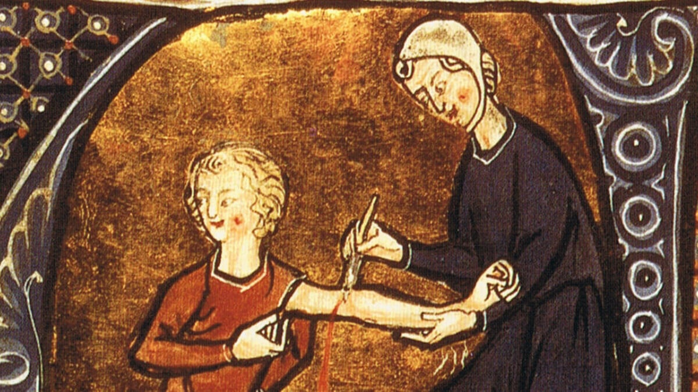

🕌 Moyen Âge (500 → 1500)
Après la chute de Rome, la médecine connaît un ralentissement en Europe médiévale, où elle est fortement influencée par la religion. Les dissections sont rares et les maladies sont souvent interprétées comme des châtiments divins.
Cependant, dans le monde islamique, notamment à Bagdad, la médecine connaît un véritable âge d’or. Le grand savant Avicenne (980–1037) écrit le Canon de la médecine, une œuvre monumentale qui synthétise les connaissances médicales de l’époque. Ce livre sera utilisé en Europe pendant plusieurs siècles.
Les médecins musulmans développent des hôpitaux modernes, organisés en services spécialisés, et introduisent des méthodes expérimentales.
En Europe, un événement dramatique marque cette période : la Peste noire (1347–1351), qui cause des millions de morts. Cette catastrophe met en évidence les limites de la médecine médiévale et pousse à chercher de nouvelles explications.
